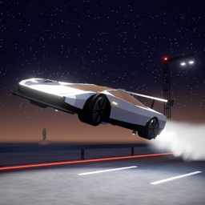

ROADSTER RUSH
Endless night-drive runner for iPhone
Drive a white electric supercar through the Texas night. Swipe to change lanes, jump on cold-gas thrusters, backflip over traffic, hover across broken roads and kickflip off the curl ramp.
Support
Questions, bugs or purchase issues — email dbabichev9@gmail.com. Please include your iPhone model and iOS version.
Purchases missing? Open Settings in the game and tap Restore Purchases.
Controls
- Swipe left / right — change lanes
- Swipe up — jump; swipe up again in the air — thruster boost (uses AIR)
- Hold in the air — hover (uses AIR)
- Swipe down — slam down
Roadster Rush is an independent fan-made game and is not affiliated with or endorsed by any car or aerospace manufacturer.